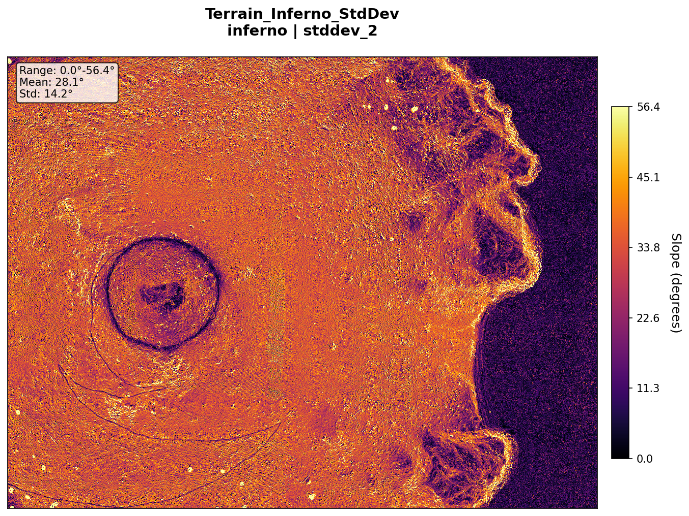
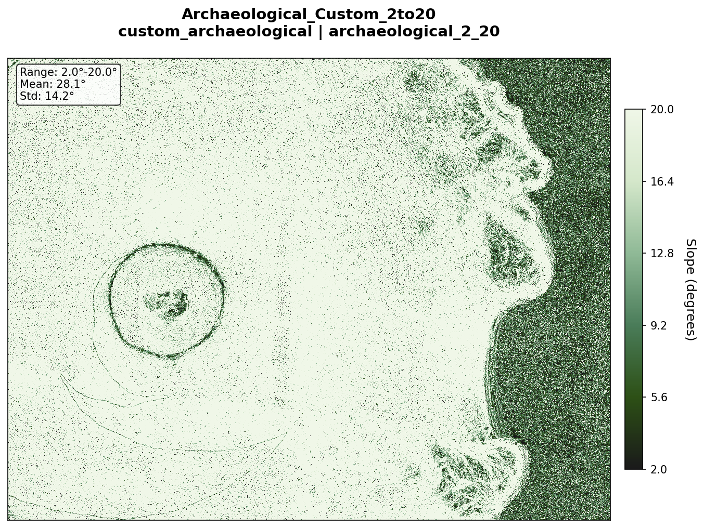
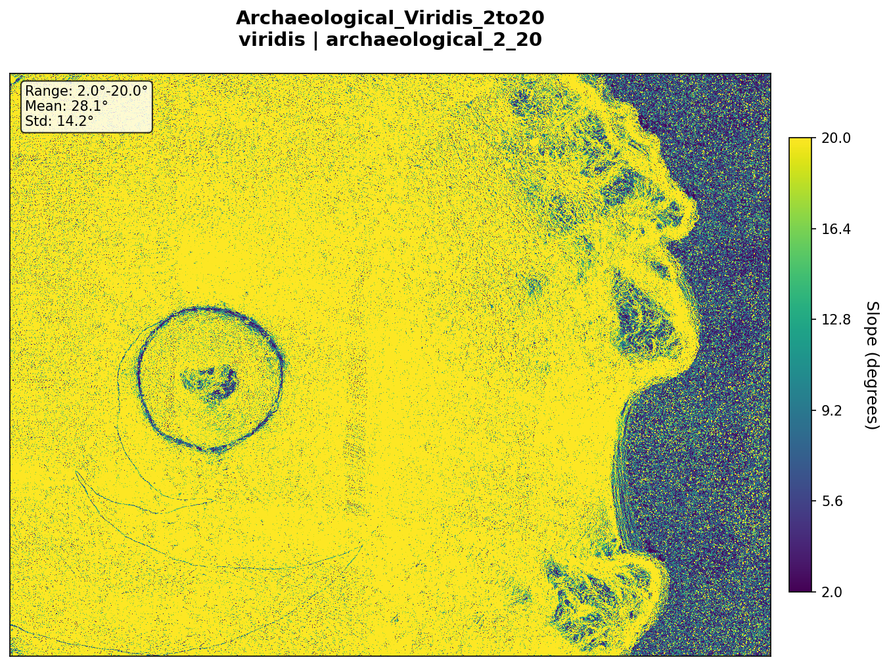
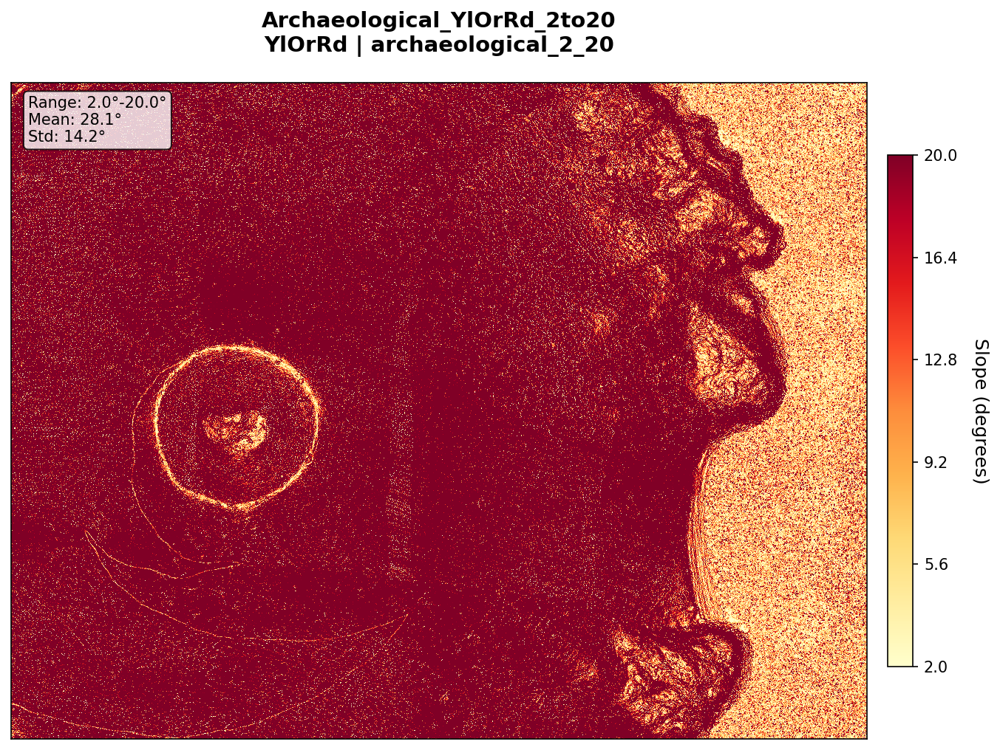
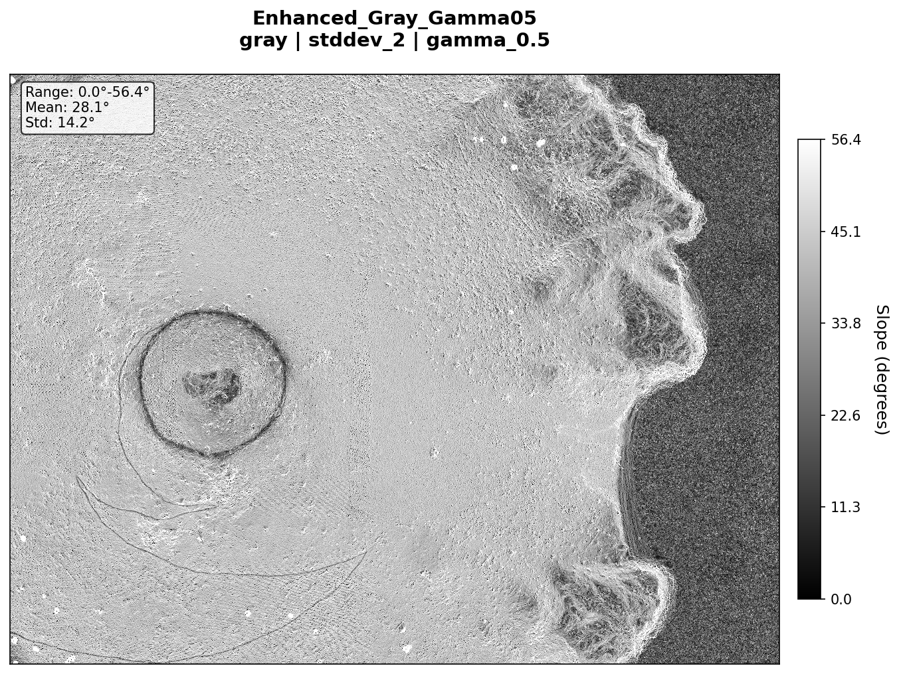
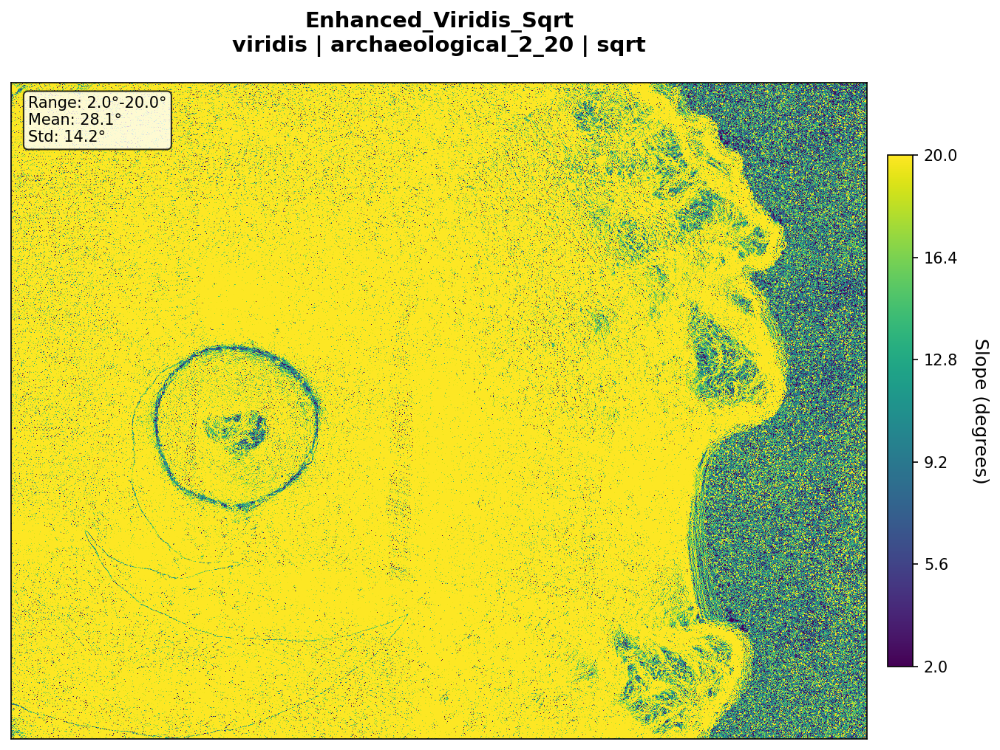
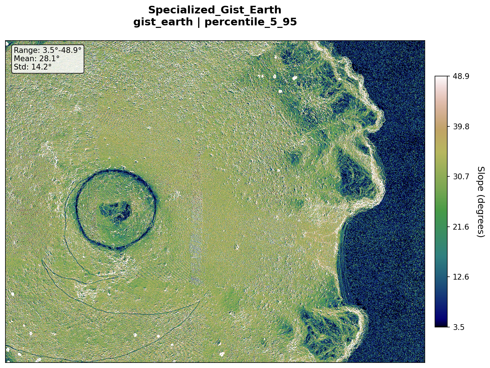

Standard Gray MinMax

Standard Gray StdDev2

Standard Gray Percentile

Terrain Viridis StdDev

Terrain Plasma StdDev

Terrain Inferno StdDev

Archaeological Custom 2to20

Archaeological Viridis 2to20

Archaeological YlOrRd 2to20

Enhanced Gray Gamma05

Enhanced Gray Gamma15

Enhanced Viridis Sqrt

Specialized Terrain

Specialized Gist Earth